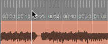
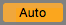
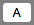
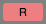
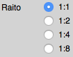

This application supports some keys for shortcut and mouse operations. This page describes shortcut keys and mouse operations respectively.
The following table shows shortcut keys supported this application.
| Key | Operation |
|---|---|
| space | Audio play/stop |
| s | Set play time to zero(00:00:000). |
| r | Enable/disable repeat. |
| b | Set play time at start position after stop audio. |
| n | Enable/disable navigation. |
| 0 | Change Track window. |
| 1 | Change Mixer window. |
| 2 | Change Effect window. |
According to the table, the shortcut key "n" is a navigation function which displays the message at a mouse position how to use this application. Enabling the function changes the color of "Navigation" in menu as shown below.
This application supports mouse operations as shown below.
| Operation | Items | Function |
|---|---|---|
| Click | Set play time to zero(00:00:000). | |
| Play audio. | ||
| Stop audio. | ||
| Set play time at start audio after stop audio. | ||
| Enable/disable repeat. | ||
| Set repeat start/end time for the song part "Intro." | ||
| Set repeat start/end time for the song part "A." | ||
| Set repeat start/end time for the song part "B." | ||
| Set repeat start/end time for the song part "C." | ||
| Set repeat start/end time for the song part "Outro." | ||
| Change Track window. | ||
| Change Mixer window. | ||
| Change Effect window. | ||
| Drag & drop | Change play time. | |
| Change repeat start time. | ||
| Change repeat end time. |
| Operation | Items | Function |
|---|---|---|
| Click | Set panning to center. | |
| Enable/disable mute. | ||
| Enable/disable solo. | ||
| Enable/disable to record for automation. | ||
| Enable/disable to play for automation. | ||
| Change Effect window. | ||
| Click, Drag & drop | Change panning. | |
| Change volume. |
| Operation | Items | Function |
|---|---|---|
| Click | Disable mute for all audio channel. | |
| Disable solo for all audio channel. | ||
| Scroll "Time ruler" and all "Track lane" automatically. | ||
| Reduce horizontal(time). | ||
| Enlarge horizontal(time). |
| Operation | Items | Function |
|---|---|---|
| Click |  | Set a play line(a white vertical line) on track lanes and play time in Transpose. |
| Click + command(Mac)/ctrl(PC) | Set the marker and repeat start time in Transpose. | |
| Click + alt | Set the marker and repeat end time in Transpose. |
| Operation | Items | Function |
|---|---|---|
| Click | Change an audio channel in Inspector. | |
| Display an automation track. | ||
| Hide an automation track. | ||
| Enable/disable mute. | ||
| Enable/disable solo. | ||
| Enable/disable to record for automation. | ||
| Enable/disable to play for automation. | ||
| Change Effect window. | ||
| Change a play line(a white vertical line) and set play time in Inspector. | ||
| Click + command(Mac)/ctrl(PC) | Set the markers in Time ruler and times in Transpose of repeat start/end for an audio duration. |
| Operation | Items | Function |
|---|---|---|
| Click | Enlarge an automation track for vertical. | |
| Reduce an automation track for vertical. | ||
| Enable to delete an automation datum in a track lane. | ||
| Enable to add an automation datum in a track lane. | ||
| Enable to move an automation datum in a track lane. | ||
| Enable to edit an automation datum in a track lane. | ||
| Click or drag & drop | Select automation type. | |
| Click + alt | Change a mode to delete an automation datum after clicked in a track lane. | |
| Click + command(Mac)/ctrl(PC) | Change a mode to add an automation datum after clicked in a track lane. | |
| Click + shift | Change a mode to move an automation datum after clicked in a track lane. | |
| Click + alt + command/ctrl | Change a mode to edit an automation datum after clicked in a track lane. | |
| Click + alt + command/ctrl + shift | Cancel a mode. | |
| Drag & drop |  | Change the time of an automation datum selected in a track lane in "Edit" mode. |
| Change the value of an automation datum selected in a track in "Edit" mode. |
| Operation | Items | Function |
|---|---|---|
| Click |  | Display icons in Position Mixer at play time automatically. |
| Display icons in Position Mixer for "Rhythm." | ||
| Display in Position Mixer all icons. | ||
| Hide all icons. | ||
|  | Display icons in Position Mixer for the song part "A." | |
| Display icons in Position Mixer for the song part "B." | ||
| Display icons in Position Mixer for the song part "C," | ||
| Display / hide an icon in Position Mixer. | ||
| Set panning to center. | ||
| Enable/disable mute. | ||
| Enable/disable solo. | ||
|  | Enable/disable to record for automation. | |
| Enable/disable to play for automation. | ||
| Change Effect window. | ||
| Display an icon in "Icon position" and select the corresponding check-box in "ICON SELECT." | ||
| Click, Drag & drop | Change panning. | |
| Change volume. | ||
| Drag & drop | Change panning(vertical) and volume(horizontal). |
| Operation | Items | Function |
|---|---|---|
| Click or drag & drop | Select part/output ch. to operate EQ & compressor. | |
| Click | Set panning to center. | |
| Enable/disable mute. | ||
| Enable/disable solo. | ||
| Enable/disable to record for automation. | ||
| Enable/disable to play for automation. | ||
| Change Effect window. | ||
| Set a previous ch. as current ch. to operate EQ & compressor. | ||
| Set a next ch. as current ch. to operate EQ & compressor. | ||
| Set previous/next ch. as current ch. | ||
| Click, Drag & drop | Change panning. | |
| Change volume. |
| Operation | Items | Function |
|---|---|---|
| Click | Enable/disable EQ. | |
| Enable/disable a filter effect and display/hide a filter curve & marker in EQ spectrum. Also, set the filter parameters:frequency, Q, and gain to input-boxes when checked. | ||
| Click or drag & drop | Select a filter type. | |
| Drag & drop | Change frequency. | |
| Change Q. | ||
| Change gain. | ||
| Click, drag & drop | Click:set the filter parameters corresponding a clicked marker. Drag & drop:change a filter curve and maker position and update the frequency & gain to the input-boxes automatically. |
| Operation | Items | Function |
|---|---|---|
| Click | Enable/disable compressor. | |
|  | Change ratio. | |
| Drag & drop | Change threshold. | |
| Change knee. | ||
| Change attack. | ||
| Change release. | ||
| Drag & drop | Change a curve and marker position and update threshold to the input-box automatically. |